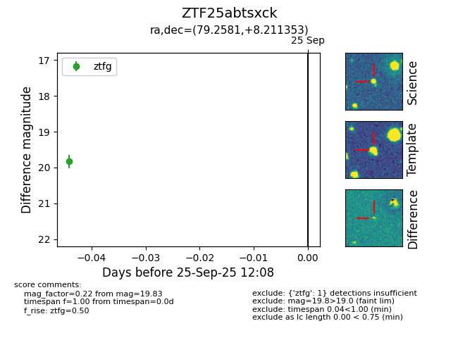

FINK: ZTF25abtsxck
Lasair: ZTF25abtsxck
ALeRCE: ZTF25abtsxck
ZTF25abtsxck (ztf,fink)
equatorial (ra, dec) = (79.2581,+8.21135)
galactic (l, b) = (194.1857,-16.71117)

last ztfg=19.83
1 ztfg detections